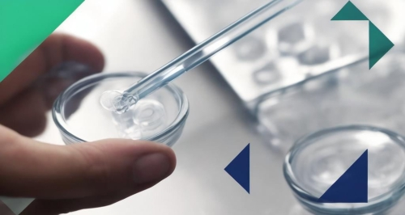

引言
随着全球人口老龄化趋势加剧和技术进步不断推进，医疗健康行业正成为投资者眼中的“黄金赛道”。尤其是在经历了过去几年的波动之后，医疗赛道的投资热度不减反增，展现出强大的韧性和潜力。从生命科学到临床医学，再到生物技术，每一个细分领域都在吸引着资本的关注。
透视医疗赛道布局
自2022年以来，尽管整体股权投资市场有所放缓，但医疗赛道的投资依然保持活跃态势。根据清科数据，2022年第一季度中国股权投资市场发生的投资事件虽较前一年同期下降，但医疗健康领域的亮点仍然频现。这一趋势在2024年得到了延续，不仅有大型软件公司等非传统玩家的入局，还有像IDG资本这样的老牌投资机构持续加码。
投资机构在医疗赛道的布局往往基于一套严谨的投资逻辑。例如，IDG资本不仅关注公司的短期盈利能力，更重视其长期发展潜力和技术壁垒。他们倾向于选择那些拥有独特技术和解决方案的企业，尤其是在生物技术和制药、医疗器械等高壁垒领域。
此外，一些传统的制造业或消费品牌也开始跨界布局医疗赛道。比如，资生堂中国设立的10亿专项投资基金专注于医学美容赛道，而比亚迪等新能源产业链企业也在积极布局医疗相关业务，这些跨界的尝试反映了医疗赛道对于多元化业务布局的重要性。
加速细分领域布局
在医疗赛道中，一些新兴领域如数字化医疗、个性化治疗方案、基因编辑和细胞治疗等正在逐渐成为投资热点。根据PitchBook的数据，2023年生命科学领域的全球风险投资额达到了1500亿美元，较上一年度增长了20%。其中，基因编辑技术和细胞治疗成为了最受关注的投资热点之一。
随着数字医疗技术的进步，临床医学领域也在发生深刻变革。远程医疗、AI辅助诊断系统以及个性化治疗方案正在逐渐改变传统的医疗服务模式。据Frost & Sullivan预测，2024年全球数字医疗市场规模将达到5000亿美元，复合年增长率超过20%。
生物科技领域不仅涉及新药研发，还包括生物制造、生物信息学等多个分支。据统计，2023年生物科技领域的总投资额达到了1800亿美元，其中药物研发占据了最大的份额。作为mRNA疫苗技术的先驱者之一，Moderna在COVID-19疫情中发挥了重要作用。2023年，该公司宣布将投入10亿美元用于扩展其mRNA平台，并探索更多疾病领域的应用。

机遇与挑战并存
随着人们对于生命健康的重视，对生命质量的需求不断增长，全球新一轮科技革命和产业变革加速演进，小分子靶向药物、治疗性基因编辑、新型药物递送系统等新产品、新技术不断涌现，合成生物、AI制药、脑机接口、医疗机器人等前沿交叉技术不断突破。在这一前景下，将诞生出更多行业供应链新机遇，也促进很多投资机构在向创新项目上转变。
中国老龄人口的增加，使得老龄人口对健康医疗消费观的转变开始变快，将展现出比40后、50后更强烈的消费能力，以及更加多元化的消费需求，他们对于新技术和新产品将有更大的接受度。
随着政策支持的加强和技术的进步，预计会有更多具有创新性的医疗项目涌现出来。医疗赛道将继续吸引来自不同领域的投资者，并且可能会出现更多的跨界合作。随着行业标准的逐步完善和技术的成熟，医疗赛道有望迎来新一轮的增长周期。对于投资者而言，选择正确的赛道和项目至关重要。